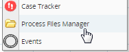
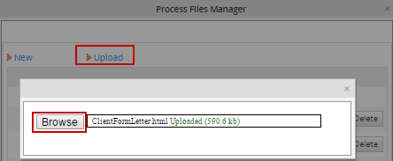
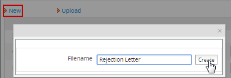
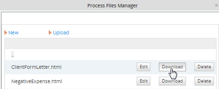

Overview
The Process Files Manager is used to store files which will be used in a process, such as common documents for the organization, graphics files, and email templates. The Process Files Manager stores its files either in the mailTemplates directory, which stores email templates used by notifications, or in the public directory, which stores any other type of file.
Unlike attached files, Input Documents, and Output Documents, which are associated with individual cases and whose access is controlled by role based access control (RBAC), the files in the Process Files Manager are not governed by RBAC and can be accessed by any user. In addition, the files in the public directory are publicly accessible (if the processmaker server has a publicly accessible IP number or domain name).
Adding files
Open a process and then right click on a blank area in the process map. In the dropdown menu that appears, select the Process Files Manager option:

Select either the public or mailTemplates directory:

A list of files in the directory will be displayed:

Uploading Files
If a file already exists on the local computer, it can be uploaded to the Process Files Manager. This is an especially useful option if editing email template files using an external HTML editor such DreamWeaver. To upload the file, click on the Upload link at the top of the list.
Click on it and then select the file stored on the local computer to be uploaded to the ProcessMaker server. The file will be uploaded automatically and added to the list of files. If the file already exists, it will be replaced with the new version of the file.

Then, either click on Upload to select another file to upload or click on [X] to close the dialog box and return to the Process Files Manager.
Note: Each template uploaded is only available per process not per workspace.
New Files
ProcessMaker provides a simple WYSIWYG editor for creating new HTML files. Click on the New link at the top of the files list.

Enter the name of the file to create. Do not include the extension, since the extension of ".html" will be added automatically to the filename.

Edit the new file in the simple WYSIWYG editor. When done editing, click on Save.
Editing the HTML Code
To edit the HTML source code for an existing file in the Process Files Manager, open the list of files and click on the Download link for the file.

After saving the file to the local computer, edit it with plain text or HTML editor. After editing the file, click on Upload to upload the new version of the file.
Alternatively, the source code can be edited by opening the file where it is stored in the file system on the ProcessMaker server.
Accessing "public" Files
To access the files in the public directory, direct a web browser to the following link:
- http://<IP-ADDRESS>:<PORT>/sys<WORKSPACE>/<LANGUAGE>/<SKIN>/<PROCESS-UID>/<FILENAME>
For example, ProcessMaker is installed at the IP address 192.168.1.100, using the default "workflow" workspace, the default "en" (English) language, and the default "green" skin. To link to the file "quarterReport.xls" in a process with a UID of "40825258848d67d3d5d1d52083561715":
http://192.168.1.100/sysworkflow/en/green/40825258848d67d3d5d1d52083561715/quarterReport.xls
The complete URL should be used when linking to files in Email and Output Document templates, but relative links can be used for link fields in DynaForms:
- ../<PROCESS-UID>/<FILENAME>
For example:
- ../40825258848d67d3d5d1d52083561715/quarterReport.xls
If using version 2.0.32 or before for setting fixed URLs in link fields, use the following workaround:
Edit directly the XML code for the link field and set the value of the "link" property:
For example, if needing to link to a file in the "public" folder of the Process Files Manager which is looked at the relative address "../9476503754e7b4349a64b12098697423/MyGraphic.png", then edit the XML definition for a link named "mylink":
value="My Graphic" hint="" required="0" readonly="0" savelabel="0">
<en>My Link</en>
</mylink>
Finding the Process Unique ID
There are several ways to find the unique ID for a process:
- 1. In a trigger or the debugger, examine @@PROCESS system variable, which holds the unique ID for the current process.
- 2. Go to ADMIN > Web Services before version 2.0 or ADMIN > Settings > Web Services Test in version 2.0 or later. Click on the [test] link for the Login function and enter the username and password for the "admin" or another user with the PM_FACTORY permission in his/her role. After logging in, click on the [test] link for the ProcessList function to see a list of processes and their UIDs.
Generating Links Dynamically in Templates
If creating a link to a file in the "public" directory for the current process, the link can be generated using ProcessMaker's system variables in an email or Output Document template:
- http://<IP-ADDRESS>/sys@#SYS_SYS/@#SYS_LANG/@#SYS_SKIN/@#PROCESS/<FILENAME>
Note: If the file is stored in the "public" directory of a different process, then the unique ID for that process will have to be used in place of the @@PROCESS variable.
For example, Acme Inc. uses the following email template to include a link to a file named "clientContract.doc" which is stored in the "public" directory for the current process:
Please review the details for your contract:
http://www.acme.com/sys@#SYS_SYS/@#SYS_LANG/@#SYS_SKIN/@#PROCESS/clientContract.doc
Best Regards,
Wiley E.
URLs in HTML Links and Images
System variables can also be used to construct the URL inside of HTML links <a href="url">label</a> and images <img src="url"> in templates.
For example, Acme uses the following Output Document template to display the company letter head as an image at the top of its letter and provide a link to its human resources policies:
Dear @#EmployeeName,
Please review our <a href="http://www.acme.com/sys@#SYS_SYS/@#SYS_LANG/@#SYS_SKIN/@#PROCESS/HRPolicies.doc">Human Resources Policies</a>
before the next personnel meeting at @#MeetingTime on @#MeetingDate.
Sincerely,
@#ManagerName
Remember that images inserted should be hosted in a server with public access, otherwise loading issues might occur.
Generating Links Dynamically in Triggers
To create a link to a file in the process's "public" directory inside of a trigger, PHP's $_SERVER superglobal and ProcessMaker's system variables can be used to dynamically generate the link. For example, if creating a link to a file named "userList.txt":
@@SYS_LANG . '/' . @@SYS_SKIN . '/' . @@PROCESS . '/userList.txt';
The case variable @#userListUrl can then be used in an email or Output Document template. If a subsequent DynaForm has a field named "urlUserList", then the URL will appear in the field. If needing to set the URL for a link field, then the URL will have to passed to the DynaForm in a hidden field and JavaScript will need to be added to the DynaForm to set the href property of the link.
For example, if a DynaForm has a link field named "userList" and two hidden fields named "userListUrl" and "userListLabel", then the following trigger could generate the values for the hidden fields before the DynaForm is displayed:
@@SYS_LANG . '/' . @@SYS_SKIN . '/' . @@PROCESS . '/userList.txt';
@@userListLabel = "userList.txt";
Then, the following JavaScript code can be added to the DynaForm to set the URL and label for the "userList" link field when the DynaForm loads:
getField("userList").innerHTML = getField("userListLabel").value;
Opening "public" Files in Triggers
PHP's file_get_contents() function can be used to open a file from the "public" directory. file_get_contents() accepts either web addresses or paths to files stored on the server's file system. To construct the file path to the "public" directory, use the defined constants PATH_DATA_PUBLIC and PATH_SEP. PATH_DATA_PUBLIC is defined in workflow/public_html/sysGeneric.php and has a value like "/opt/processmaker/shared/sites/workflow/public/" or "C:\Program Files\ProcessMaker\processmaker\shared\sites\workflow\public".
For example to extract the contents of a file named "formLetterContents.html" in the "public" directory of the current process and assign it to a variable named "formContents" which is inserted into an email template and sent out with the PMFSendMessage() function:
PMFSendMessage(@@APPLICATION, 'boss@acme.com', 'wiley@acme.com', '', '', 'Form Letter', 'formLetter.html',
array('formContents' => $formContents));
Similarly, the contents of the file "formLetterContents.html" could be displayed inside of a textarea field named "formContents" in a DynaForm. Fire the following trigger before the DynaForm which has the textarea:
After the user has edited the contents of the "formContents" textarea and submitted the DynaForm, fire another trigger to send out those edited contents in an email:
array('formContents' => @@formContents));
File Storage
<INSTALL-DIRECTORY>/shared/sites/<WORKSPACE>/<DIRECTORY>/<PROCESS-UID>/<FILENAME>
For example, the file clientform.html in the mailTemplates directory, used by the 371ac73734d824385011f94010814136 process in the default workflow workspace might be found at:
In Linux:
/opt/processmaker/shared/sites/workflow/mailTemplates/3713073734d824385011f94010814136/clientform.html
In Windows Vista/7/Server 2008, from ProcessMaker version 1.6-4260 on:
C:\Program Files\ProcessMaker\processmaker\shared\sites\workflow\mailTemplates\3713073734d824385011f94010814136\clientform.html
In Windows, before ProcessMaker version 1.6-4260:
C:\Program Files\ProcessMaker\apps\processmaker\shared\workflow_data\sites\workflow\mailTemplates\3713073734d824385011f94010814136\clientform.html
Unlike attached case files, Input Documents and Output Documents, which have to be registered in the MySQL database, files in the Process Files Manager are not registered in the MySQL database and can can be copied directly to the public and mailTemplates directories. To copy files to these directories from a remote computer use WebDAV. Alternatively, scp can be used in Linux/UNIX, or pscp in Windows.